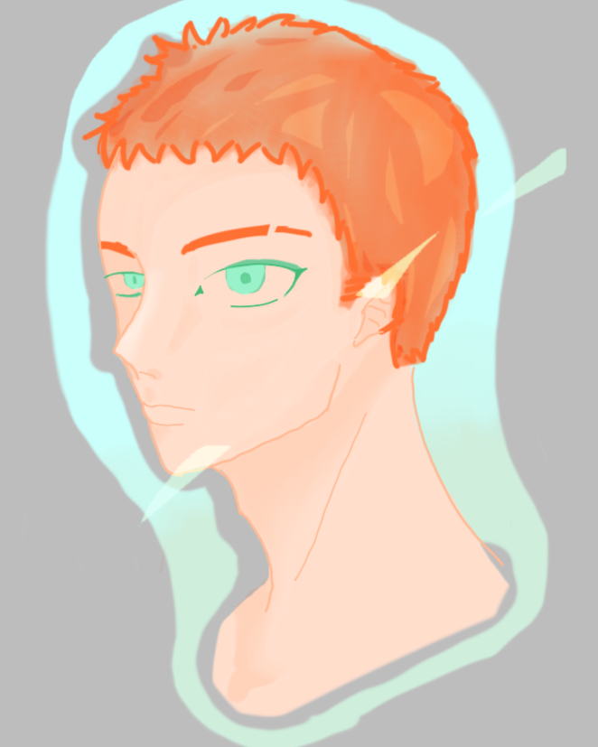

Vosto全域資料庫
Vosto全域資料庫
「沃斯托，無情且討厭。」
孟玳卿是孤兒，他也不記得他的家人在哪裡，但被收養並好好成長了。
| 孟玳卿 | |
|---|---|
 |
|
| 姓名 | 孟玳卿 |
| 生日 | ？月？日 |
| 年齡 | 19歲 |
| 性別 | 男 |
| 身體資訊 | 178公分 | 70公斤 |
| 愛好 |
None |
| 不喜 |
沃斯托 落帛格斯 |
孟玳卿不知道自己為何討厭這個體制，可從記事起便一直這麼感覺，也沒有想改變想法的意思，順從著自己。
幼年時，他太過安靜了，但沒有人欺負他，希安聯邦會讓所有人平安長大。
他被孟玳卿收養，受到良好的教養，學著自己的養父，成為一個很好的人。
這段敘述似乎遺失了。
這段敘述似乎遺失了。
該條目正在施工中。
該條目正在施工中。
澤凡是他的養父
他憎恨著安斯艾爾，因為對方殺了他的養父。
